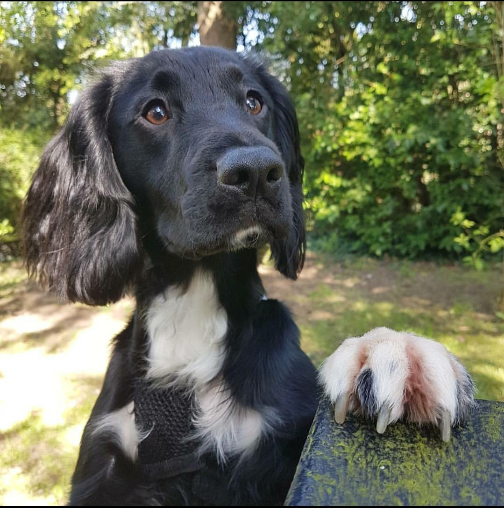
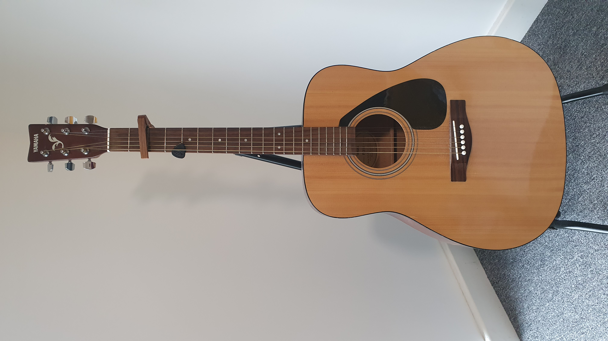

There is no one that knows you better than yourself, which is why i have made this website about the person i know best, me! In this website you will see all things me, from what i enjoy doing in my spare time to what my favourite foods are. I hope you enjoy learning about the one and only, me
"When life gives you lemons, make lemonade, or a website about yourself"
I was born in Carshalton, Surrey. I lived in Surrey for 3 years until my family moved to the sunny seaside of Skegness. I Lived there for 15 years until i finally moved to lecister for university. At home I live with my mum. I have a sister how lives with her fiance and Dog Buzz, Seen in th eimage below...
My hobbies tend to fall in the misc catagory, they seem to be all over the place. My hobbies include:
One of the most important things for me to do is go to the gym and keep healthy. Becuase of this i started to enjoy a certain style of training, strength training, also know as powerlifting! While I have not taken part in a powerlifting meet yet, I am hoping to go to one in the future. You can learn more about Powerlifting here
Learn more about powerliftingSince i was little i have always been interested in playing instruments. Guitar was on of the very first things i actually enjoyed and continued to stick to.
Since starting the gym and powerlifting, I gradually learnt to cook and I actually enjoy it a lot. I make all my meals from scratch and even make my own protein cakes, bars, smoothies and more